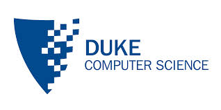
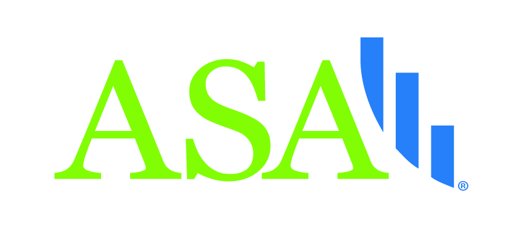

Sponsors
Thank you 2023 Sponsors!
Click here for more information about how you can support DataFest at Duke. You can also contact us if you have any questions.

2nd Order Solutions (2OS) is a boutique credit advisory firm that provides credit risk consultancy services for clients ranging from top 10 banks to financial technology startups throughout the world.
SAS technology solutions help meet the needs of organizations in practically every industry, regardless of size. Experts have deep industry knowledge and understand unique challenges and can accelerate time to decisions.

Rhodes Information Initiative is an interdisciplinary program designed to increase “big data” computational research and expand opportunities for student engagement in this rapidly growing field.
Duke Social Science Research Institute (SSRI) brings together researchers with interests in problems that cross the various social and behavioral sciences, including problems that connect with the humanities and natural sciences. SSRI promotes multidisciplinary collaboration among such scholars as they work on important social issues that are challenging to address fully from within any given discipline.

The Department of Computer Science at Duke is an internationally recognized leader in research and education. Undergraduates take classes with renowned faculty, engage in cutting-edge research, and build a strong foundation for future study or work in a wide variety of fields. One of the many hallmarks of Duke Computer Science’s success has been fruitful collaborations among different groups within the department, with research groups in other departments at Duke, with other institutes, and with industry.

The Department of Statistical Science at Duke is nationally ranked in the top 5 research departments and as a top 10 graduate program. The Department currently (mid-late 2015) has 18 faculty, ~45 PhD students, ~70 MS students, ~70 research-active undergraduate majors, numerous postdocs, visitors, and affiliated researchers listed under People. Recognized as the world’s leading center for Bayesian statistics and its interdisciplinary applications, the Department is a Duke campus hub for statistical and computational research.
Acknowledgements

The Center for Data and Visualization Sciences of the Duke Libraries has a mission to “partner with faculty, researchers, and students through consultation, instruction, co-curricular programming, and research assistance at various stages of the research data lifecycle.” They will be offering some of the ASA DataFestTM workshops. Click here for more information.
The Office of Information Technology manages Duke’s central technology infrastructure and provides services and applications to support the educational and research missions of the institution, as well as the university’s business functions. They are providing computing resources and support for the event.

The American Statistical Association is the world’s largest community of statisticians, the “Big Tent for Statistics.” It is the second-oldest, continuously operating professional association in the country. Since it was founded in Boston in 1839, the ASA has supported excellence in the development, application, and dissemination of statistical science through meetings, publications, membership services, education, accreditation, and advocacy.